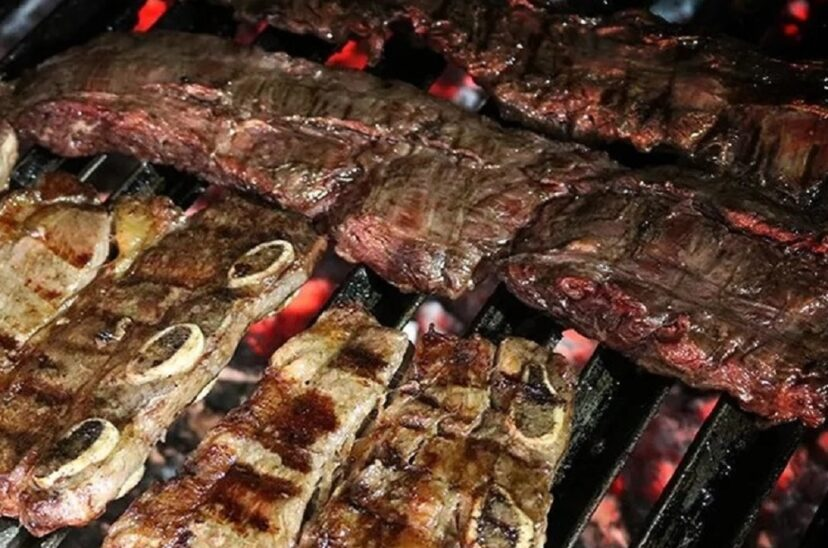

Asado

Descripción
Una de las principales comidas argentinas, en esta página voy a explicarte
el paso a paso, ¡para que puedas destacarte en tu próxima reunion!
Ingredientes
Pasos
- Sale a gusto la carne cruda.
- Prepare madera y cartón para iniciar el fuego.
- Una vez que comienza a prenderse comience a poner encima el carbón.
- Cuando vea que el carbón esta realmente caliente es momento de ponerlo
debajo de la parrilla.
- A medida que va calentando, puede comenzar a poner la carne (procure que
no esté muy caliente, esto podria hacer que la carne no se cocine bien y se queme).
- Una vez que te hecha la parte de abajo, dele la vuelta para que se cocine de el otro lado.
- ¡Listo! Puede condimentar con provenzal para mayor degustación.